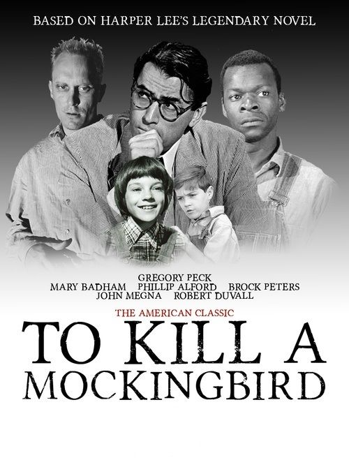
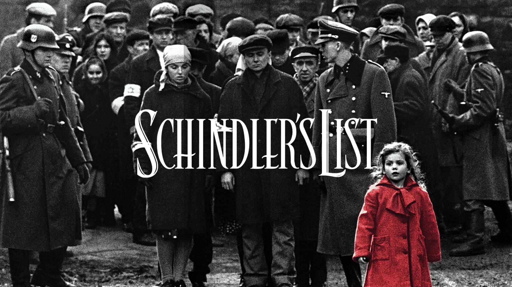
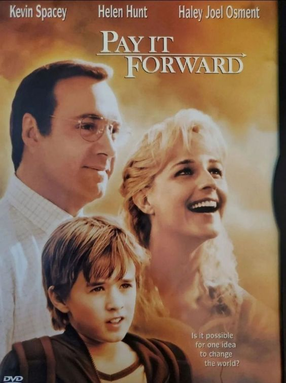

_stnroktvia_
TO KILL A MOCKINGBIRD (1962)

To Kill a Mockingbird adalah sebuah film drama-kriminal Amerika tahun 1962 yang disutradarai oleh Robert Mulligan. Film ini berdasarkan novel berjudul sama yang memenangkan Hadiah Pulitzer tahun 1960 karya Harper Lee.
Sinopsis: Di kota kecil Alabama pada tahun 1932, Atticus Finch adalah seorang pengacara. Dia memiliki dua anak kecil, Jem dan Scout. Atticus Finch mengambil kasus yang rumit pada saat itu, membela Tom Robinson, seorang pria kulit hitam yang dituduh memperkosa seorang wanita kulit putih. Sementara itu, Jem dan Scout tertarik dengan tetangga mereka, keluarga Radley, khususnya Boo Radley yang misterius dan jarang terlihat.
SCHINDLER's LIST (1993)

Schindler's List adalah sebuah film drama sejarah epik Amerika tahun 1993 yang disutradarai dan diproduksi oleh Steven Spielberg. Film ini berdasarkan pada novel Schindler's Ark tahun 1982 karya novelis Australia Thomas Keneally.
Sinopsis:Oskar Schindler adalah seorang pengusaha Jerman yang sombong dan serakah yang mengubah pabriknya menjadi tempat perlindungan bagi orang Yahudi. Berdasarkan kisah nyata Oskar Schindler yang berhasil menyelamatkan sekitar 1100 orang Yahudi dari serangan gas di kamp konsentrasi Auschwitz.
PAY IT FORWARD (2000)

Sinopsis: Trevor McKinney, yang merasa terganggu oleh ibunya yang kecanduan alkohol dan ketakutan terhadap ayahnya yang kasar, terjebak dalam tugas sekolah dari guru IPS barunya, Mr. Simonet. Tugasnya: memikirkan sesuatu untuk mengubah dunia dan mewujudkannya. Trevor memunculkan gagasan "Pay it Forward" yaitu meneruskan--membalas perbuatan baik bukan dengan imbalan, tapi dengan perbuatan baik baru yang dilakukan kepada tiga orang baru.
GREEN BOOK (2018)
Penjaga kelas pekerja Italia-Amerika menjadi pengemudi pianis klasik Afrika-Amerika dalam tur ke berbagai tempat di Amerika Selatan tahun 1960-an.
Sinopsis: Don Shirley adalah seorang pianis Afrika-Amerika kelas dunia yang akan memulai tur konsernya pada tahun 1962. Karena membutuhkan pengemudi dan pengawal, Shirley merekrut Tony Lip,seorang Italia yang keras kepala .
THE VANISHING OF SIDNEY HALL (2018)
Sidney Hall menemukan cinta yang tak terduga, lalu menghilang tanpa jejak.
Sinopsis: Di sekolah menengah, Sidney yang berbakat menulis esai yang terlalu berani bagi guru bahasa Inggrisnya, seperti halnya sebagian besar artikel yang ia kirimkan ke koran sekolah. Lalu ada seorang gadis misterius bernama Melody. Sidney memutuskan untuk menulis novel yang menjadi buku terlaris internasional. Tapi kemudian dia menghilang selama bertahun-tahun.
Siti Nur Oktavia
11210251000119